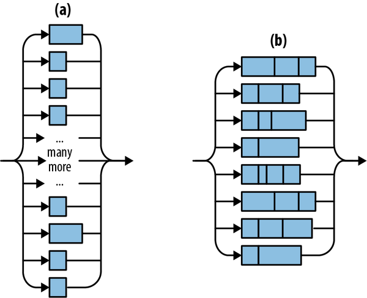
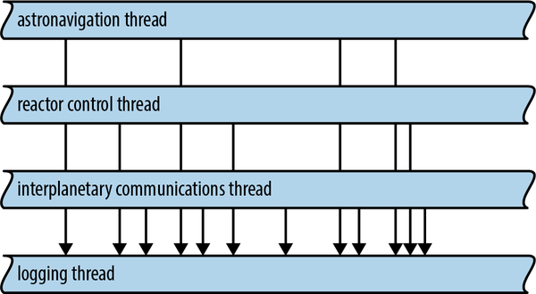
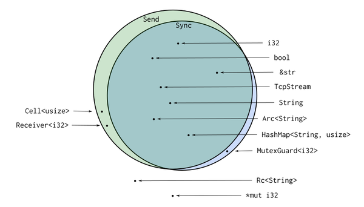
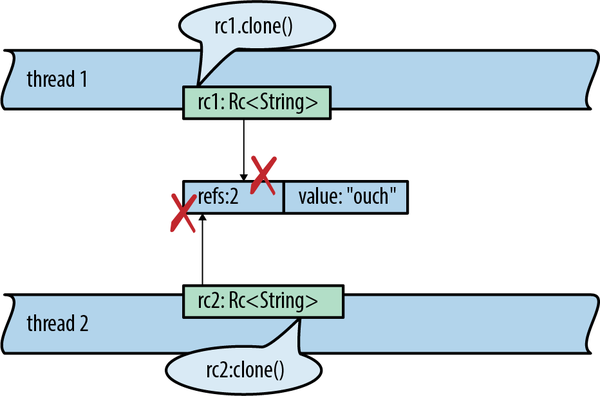

Chapter 19. Threads
In the long run it is not advisable to write large concurrent programs in machine-oriented languages that permit unrestricted use of store locations and their addresses. There is just no way we will be able to make such programs reliable (even with the help of complicated hardware mechanisms).
Per Brinch Hansen (1977)
Patterns for communication are patterns for parallelism.
Whit Morriss
If your attitude toward threads has changed over the course of your career, you’re not alone. It’s a common story.
At first, writing multithreaded code is easy and fun. The tools—locks, queues, and so on—are a snap to pick up and use. There are a lot of pitfalls, it’s true, but fortunately you know what they all are, and you are careful not to make mistakes.
At some point, you have to debug someone else’s multithreaded code, and you’re forced to conclude that some people really should not be using these tools.
Then at some point you have to debug your own multithreaded code.
Experience inculcates a healthy skepticism, if not outright cynicism, toward threads generally. This is helped along by the occasional article explaining in mind-numbing detail why some obviously correct locking idiom does not work at all. (It has to do with “the memory model.”) But you eventually find one approach to concurrency that you think you can realistically use without constantly making mistakes. You can shoehorn pretty much everything into that idiom, and (if you’re really good) you learn to say “no” to added complexity.
Of course, there are rather lots of idioms. Approaches that systems programmers commonly use include the following:
-
A background thread that has a single job and periodically wakes up to do it.
-
General-purpose worker pools that communicate with clients via task queues.
-
Pipelines where data flows from one thread to the next, with each thread doing a little of the work.
-
Data parallelism, where it is assumed (rightly or wrongly) that the whole computer will mainly just be doing one large computation, which is therefore split into n pieces and run on n threads in the hopes of putting all n of the machine’s cores to work at once.
-
A sea of synchronized objects, where multiple threads have access to the same data, and races are avoided using ad hoc locking schemes based on low-level primitives like mutexes. (Java includes built-in support for this model, which was quite popular during the 1990s and 2000s.)
-
Atomic integer operations allow multiple cores to communicate by passing information through fields the size of one machine word. (This is even harder to get right than all the others, unless the data being exchanged is literally just integer values. In practice, it’s usually pointers.)
In time, you may come to be able to use several of these approaches and combine them safely. You are a master of the art. And things would be great, if only nobody else were ever allowed to modify the system in any way. Programs that use threads well are full of unwritten rules.
Rust offers a better way to use concurrency, not by forcing all programs to adopt a single style (which for systems programmers would be no solution at all), but by supporting multiple styles safely. The unwritten rules are written down—in code—and enforced by the compiler.
You’ve heard that Rust lets you write safe, fast, concurrent programs. This is the chapter where we show you how it’s done. We’ll cover three ways to use Rust threads:
-
Fork-join parallelism
-
Channels
-
Shared mutable state
And in the next chapter, we’ll expand this view to include asynchronous code, a form of lightweight cooperative concurrency that is well-suited for network services. Asynchronous code and threads are distinct approaches to concurrency, but they build on the same foundational Rust concepts. Since threads are more fundamental and a bit simpler, we cover them first.
As you learn about threads in Rust, you’re going to use everything you’ve learned so far about the language. The care Rust takes with references, mutability, and lifetimes is valuable enough in single-threaded programs, but it is in concurrent programming that the true significance of those rules becomes apparent. They make it possible to expand your toolbox, to hack multiple styles of multithreaded code quickly and correctly—without skepticism, without cynicism, without fear.
Fork-Join Parallelism
The simplest use cases for threads arise when we have several completely independent tasks that we ’d like to do at once.
For example, suppose we’re doing natural language processing on a large corpus of documents. We could write a loop:
fnprocess_files(filenames:Vec<String>)->io::Result<()>{fordocumentinfilenames{lettext=load(&document)?;// read source fileletresults=process(text);// compute statisticssave(&document,results)?;// write output file}Ok(())}
The program would run as shown in Figure 19-1.

Figure 19-1. Single-threaded execution of process_files()
Since each document is processed separately, it’s relatively easy to speed this task up by splitting the corpus into chunks and processing each chunk on a separate thread, as shown in Figure 19-2.
This pattern is called fork-join parallelism. To fork is to start a new thread, and to join a thread is to wait for it to finish. We’ve already seen this technique: we used it to speed up the Mandelbrot program in Chapter 2.
Fork-join parallelism is attractive for a few reasons:
-
It’s dead simple. Fork-join is easy to implement, and Rust makes it easy to get right.
-
It avoids bottlenecks. There’s no locking of shared resources in fork-join. The only time any thread has to wait for another is at the end. In the meantime, each thread can run freely. This helps keep task-switching overhead low.
-
The performance math is straightforward. In the best case, by starting four threads, we can finish our work in a quarter of the time. Figure 19-2 shows one reason we shouldn’t expect this ideal speedup: we might not be able to distribute the work evenly across all threads. Another reason for caution is that sometimes fork-join programs must spend some time after the threads join combining the results computed by the threads. That is, isolating the tasks completely may make some extra work. Still, apart from those two things, any CPU-bound program with isolated units of work can expect a significant boost.
-
It’s easy to reason about program correctness. A fork-join program is deterministic as long as the threads are really isolated, like the compute threads in the Mandelbrot program. The program always produces the same result, regardless of variations in thread speed. It’s a concurrency model without race conditions.

Figure 19-2. Multithreaded file processing using a fork-join approach
The main disadvantage of fork-join is that it requires isolated units of work. Later in this chapter, we’ll consider some problems that don’t split up so cleanly.
For now, let’s stick with the natural language processing example. We’ll show a few ways of applying the fork-join pattern to the process_files function.
spawn and join
The function std::thread::spawn starts a new thread:
usestd::thread;thread::spawn(||{println!("hello from a child thread");});
It takes one argument, a FnOnce closure or function. Rust starts a new thread to run the code of that closure or function. The new thread is a real operating system thread with its own stack, just like threads in C++, C#, and Java.
Here’s a more substantial example, using spawn to implement a parallel version of the process_files function from before:
usestd::{io,thread};fnprocess_files_in_parallel(filenames:Vec<String>)->io::Result<()>{// Divide the work into several chunks.constNTHREADS:usize=8;letworklists=split_vec_into_chunks(filenames,NTHREADS);// Fork: Spawn a thread to handle each chunk.letmutthread_handles=vec![];forworklistinworklists{thread_handles.push(thread::spawn(move||process_files(worklist)));}// Join: Wait for all threads to finish.forhandleinthread_handles{handle.join().unwrap()?;}Ok(())}
Let’s take this function line by line.
fnprocess_files_in_parallel(filenames:Vec<String>)->io::Result<()>{
Our new function has the same type signature as the original process_files, making it a handy drop-in replacement.
// Divide the work into several chunks.constNTHREADS:usize=8;letworklists=split_vec_into_chunks(filenames,NTHREADS);
We use a utility function split_vec_into_chunks, not shown here, to divide up the work. The result, worklists, is a vector of vectors. It contains eight evenly sized portions of the original vector filenames.
// Fork: Spawn a thread to handle each chunk.letmutthread_handles=vec![];forworklistinworklists{thread_handles.push(thread::spawn(move||process_files(worklist)));}
We spawn a thread for each worklist. Each call to thread::spawn returns a value called a JoinHandle, which we’ll use later. For now, we put all the JoinHandles into a vector.
Note how we get the list of filenames into the worker thread:
-
worklistis defined and populated by theforloop, in the parent thread. -
As soon as the
moveclosure is created,worklistis moved into the closure. -
spawnthen moves the closure (including theworklistvector) over to the new child thread.
These moves are cheap. Like the Vec<String> moves we discussed in Chapter 4, the Strings are not cloned. In fact, nothing is allocated or freed. The only data moved is the Vec itself: three machine words.
Most every thread you create needs both code and data to get started. Rust closures, conveniently, contain whatever code you want and whatever data you want.
Moving on:
// Join: Wait for all threads to finish.forhandleinthread_handles{handle.join().unwrap()?;}
We use the .join() method of the JoinHandles we collected earlier to wait for all eight threads to finish. Joining threads is often necessary for correctness, because a Rust program exits as soon as main returns, even if other threads are still running. Destructors are not called; the extra threads are just killed. If this isn’t what you want, be sure to join any threads you care about before returning from main.
If we manage to get through this loop, it means all eight child threads finished successfully. Our function therefore ends by returning Ok(()):
Ok(())}
Error Handling Across Threads
The code we used to join the child threads in our example is trickier than it looks, because of error handling. Let’s revisit that line of code:
handle.join().unwrap()?;
The .join() method does two neat things for us.
First, handle.join() returns a std::thread::Result that’s an error if the child thread panicked. This makes threading in Rust dramatically more robust than in C++. In C++, an out-of-bounds array access is undefined behavior, and there’s no protecting the rest of the system from the consequences. In Rust, panic is safe and per thread. The boundaries between threads serve as a firewall for panic; panic doesn’t automatically spread from one thread to the threads that depend on it. Instead, a panic in one thread is reported as an error Result in other threads. The program as a whole can easily recover.
In our program, though, we don’t attempt any fancy panic handling. Instead, we immediately use .unwrap() on this Result, asserting that it is an Ok result and not an Err result. If a child thread did panic, then this assertion would fail, so the parent thread would panic too. We’re explicitly propagating panic from the child threads to the parent thread.
Second, handle.join() passes the return value from the child thread back to the parent thread. The closure we passed to spawn has a return type of io::Result<()>, because that’s what process_files returns. This return value isn’t discarded. When the child thread is finished, its return value is saved, and JoinHandle::join() transfers that value back to the parent thread.
The full type that’s returned by handle.join() in this program is std::thread::Result<std::io::Result<()>>. The thread::Result is part of the spawn/join API; the io::Result is part of our app.
In our case, after unwrapping the thread::Result, we use the ? operator on the io::Result, explicitly propagating I/O errors from the child threads to the parent thread.
All of this may seem rather intricate. But consider that it’s just one line of code, and then compare this with other languages. The default behavior in Java and C# is for exceptions in child threads to be dumped to the terminal and then forgotten. In C++, the default is to abort the process. In Rust, errors are Result values (data) instead of exceptions (control flow). They’re delivered across threads just like any other value. Any time you use low-level threading APIs, you end up having to write careful error-handling code, but given that you have to write it, Result is very nice to have around.
Sharing Immutable Data Across Threads
Suppose the analysis we’re doing requires a large database of English words and phrases:
// beforefnprocess_files(filenames:Vec<String>)// afterfnprocess_files(filenames:Vec<String>,glossary:&GigabyteMap)
This glossary is going to be big, so we’re passing it in by reference. How can we update process_files_in_parallel to pass the glossary through to the worker threads?
The obvious change does not work:
fnprocess_files_in_parallel(filenames:Vec<String>,glossary:&GigabyteMap,)->io::Result<()>{...forworklistinworklists{thread_handles.push(spawn(move||process_files(worklist,glossary)),// error);}...}
We’ve simply added a glossary argument to our function and passed it along to process_files. Rust complains:
error: borrowed data escapes outside of function|24 | glossary: &GigabyteMap,| -------- - let's call the lifetime of this reference `'1`| || `glossary` is a reference that is only valid in the function body...36 | spawn(move || process_files(worklist, glossary)), // error| ^^^^^^^^^^^^^^^^^^^^^^^^^^^^^^^^^^^^^^^^^^^^^^^^| || `glossary` escapes the function body here| argument requires that `'1` must outlive `'static`
The error is about the lifetime of the reference we’re trying to share. spawn launches independent threads. Rust can’t know how long the child thread will run, so it assumes the worst: it assumes the child may keep running even after the parent has finished and all values in the parent thread are gone. Obviously, if the child thread is going to last that long, the closure it’s running needs to last that long too. But this closure has a bounded lifetime: it depends on the reference glossary, and references don’t last forever.
Note that Rust is right to reject this code! The way we’ve written this function, it is possible for one thread to hit an I/O error, causing process_files_in_parallel to bail out before the other threads are finished. Child threads could end up trying to use the glossary after the main thread has freed it. It would be a race—with undefined behavior as the prize, if the main thread should win. Rust can’t allow this.
It seems spawn is too open-ended to support sharing references across threads. Indeed, we already saw a case like this, in “Closures That Steal”. There, our solution was to transfer ownership of the data to the new thread, using a move closure. That won’t work here, since we have many threads that all need to use the same data. One safe alternative is to clone the whole glossary for each thread, but since it’s large, we want to avoid that. Fortunately, the standard library provides two tidy solutions to this problem: atomic reference counting and scoped threads.
We introduced Rust’s reference counting types in “Rc and Arc: Shared Ownership”. It’s time to put Arc to use:
usestd::sync::Arc;fnprocess_files_in_parallel(filenames:Vec<String>,glossary:Arc<GigabyteMap>,)->io::Result<()>{...forworklistinworklists{// This call to .clone() only clones the Arc and bumps the// reference count. It does not clone the GigabyteMap.letglossary_for_child=glossary.clone();thread_handles.push(spawn(move||process_files(worklist,&glossary_for_child)));}...}
We have changed the type of glossary: to run the analysis in parallel, the caller must pass in an Arc<GigabyteMap>, a smart pointer to a GigabyteMap that’s been moved into the heap, by using Arc::new(giga_map).
When we call glossary.clone(), we are making a copy of the Arc smart pointer, not the whole GigabyteMap. This amounts to incrementing a reference count.
With this change, the program compiles and runs, because it no longer depends on reference lifetimes. As long as any thread owns an Arc<GigabyteMap>, it will keep the map alive, even if the parent thread bails out early. There won’t be any data races, because data in an Arc is immutable.
Arc is designed for shared ownership, and it’s the most common way to share values across threads. In this particular case, scoped threads are another option. We used std::thread::scope in Chapter 2 to split the computation of our Mandelbrot set image across eight threads. Similar code will work here:
fnprocess_files_in_parallel(filenames:Vec<String>,glossary:&GigabyteMap,)->io::Result<()>{...std::thread::scope(|scope|{// Fork: Spawn a thread to handle each chunk.letmutthread_handles=vec![];forworklistinworklists{thread_handles.push(scope.spawn(move||process_files(worklist,glossary)));}// Join: Wait for all threads to finish.forhandleinthread_handles{handle.join().unwrap()?;}Ok(())})// <-- Join backstop: thread::scope() waits for all remaining threads}
Note that we’ve switched from Arc<GigabyteMap> back to a regular reference. We can share it across our worker threads now, because they are scoped threads, guaranteed to finish before std::thread::scope returns.
The basic std::thread::spawn function requires its closure argument to last for the 'static lifetime. This is how Rust prevents us from using it to share references unsafely. The Scope::spawn method is not so strict. Its closure argument only needs to live as long as the corresponding std::thread::scope() call, because std::thread::scope always waits for all its spawned threads to finish before returning. Thanks to the relaxed lifetime requirement, our scoped threads can use the reference glossary directly, without reference counting.
Code using scoped threads can often skip the join() phase, since all spawned threads are joined automatically. In our example, we’re still calling handle.join() explicitly, because we want to check our threads’ return values for errors. But if we do find an error and return early, std::thread::scope will nonetheless wait for the remaining threads, as required for safety.
Rayon
The Rayon library, by Niko Matsakis and Josh Stone, is an even more powerful tool for fork-join parallelism. It provides two ways of running tasks concurrently:
userayon::prelude::*;// "do 2 things in parallel"let(v1,v2)=rayon::join(fn1,fn2);// "do N things in parallel"giant_vector.par_iter().for_each(|value|{do_thing_with_value(value);});
rayon::join(fn1, fn2) simply calls both functions and returns both results. The .par_iter() method creates a ParallelIterator, a value with map, filter, and other methods, much like a Rust Iterator. In both cases, Rayon uses its own pool of worker threads to spread out the work when possible. You simply tell Rayon what tasks can be done in parallel; Rayon manages threads and distributes the work as best it can.
The diagrams in Figure 19-3 illustrate two ways of thinking about the call giant_vector.par_iter().for_each(...). (a) Rayon acts as though it spawns one thread per element in the vector. (b) Behind the scenes, Rayon has one worker thread per CPU core, which is more efficient. This pool of worker threads is shared by all your program’s threads. When thousands of tasks come in at once, Rayon divides the work.

Figure 19-3. Rayon in theory and practice
Here’s a version of process_files_in_parallel using Rayon and a process_file that takes, rather than Vec<String>, just a &str:
userayon::prelude::*;fnprocess_files_in_parallel(filenames:Vec<String>,glossary:&GigabyteMap,)->io::Result<()>{filenames.par_iter().map(|filename|process_file(filename,glossary)).reduce_with(|r1,r2|{ifr1.is_err(){r1}else{r2}}).unwrap_or(Ok(()))}
This code is shorter and less tricky than the version using std::thread::spawn. Let’s look at it line by line:
-
First, we use
filenames.par_iter()to create a parallel iterator. -
We use
.map()to callprocess_fileon each filename. This produces aParallelIteratorover a sequence ofio::Result<()>values. -
We use
.reduce_with()to combine the results. Here we’re keeping the first error, if any, and discarding the rest. If we wanted to accumulate all the errors, or print them, we could do that here.The
.reduce_with()method is also handy when you pass a.map()closure that returns a useful value on success. Then you can pass.reduce_with()a closure that knows how to combine two success results. -
reduce_withreturns anOptionthat isNoneonly iffilenameswas empty. We use theOption’s.unwrap_or()method to make the resultOk(())in that case.
Behind the scenes, Rayon balances workloads across threads dynamically, using a technique called work-stealing. It will typically do a better job keeping all the CPUs busy than we can do by manually dividing the work in advance, as in “spawn and join”.
As a bonus, Rayon supports sharing references across threads. Any parallel processing that happens behind the scenes is guaranteed to be finished by the time reduce_with returns. This explains why we were able to pass glossary to process_file even though that closure will be called on multiple threads.
(Incidentally, it’s no coincidence that we’ve used a map method and a reduce method. The MapReduce programming model, popularized by Google and Apache Hadoop, has a lot in common with fork-join. It can be seen as a fork-join approach to querying distributed data.)
Revisiting the Mandelbrot Set
Back in Chapter 2, we used fork-join concurrency to render the Mandelbrot set. This made rendering four times as fast—impressive, but not as impressive as it could be, considering that we had the program spawn eight worker threads and ran it on an eight-core machine!
The problem is that we didn’t distribute the workload evenly. Computing one pixel of the image amounts to running a loop (see “What the Mandelbrot Set Actually Is”). It turns out that the pale gray parts of the image, where the loop quickly exits, are much faster to render than the black parts, where the loop runs the full 255 iterations. So although we split the area into equal-sized horizontal bands, we were creating unequal workloads, as Figure 19-4 shows.

Figure 19-4. Uneven work distribution in the Mandelbrot program
This is easy to fix using Rayon. We can just fire off a parallel task for each row of pixels in the output. This creates several hundred tasks that Rayon can distribute across its threads. Thanks to work-stealing, it won’t matter that the tasks vary in size. Rayon will balance the work as it goes.
To use Rayon, we must add this line to main.rs:
userayon::prelude::*;
and this to Cargo.toml:
[dependencies]rayon="1.12.0"
Here is the code. The first line and the last line are part of the main function we showed back in “A Concurrent Mandelbrot Program”, but we’ve changed the rendering code, which is everything in between:
let(width,height)=bounds;letmutpixels=vec![0;width*height];letbands:Vec<(usize,&mut[u8])>=pixels.chunks_mut(width).enumerate().collect();bands.into_par_iter().for_each(|(i,band)|{lettop=i;letband_bounds=(width,1);letband_upper_left=pixel_to_point(bounds,(0,top),upper_left,lower_right);letband_lower_right=pixel_to_point(bounds,(width,top+1),upper_left,lower_right);render(band,band_bounds,band_upper_left,band_lower_right);});write_image(&args[1],&pixels,bounds).expect("error writing PNG file");
First, we create bands, the collection of tasks that we will be passing to Rayon. Each task is just a tuple of type (usize, &mut [u8]): the row number, since the computation requires that, and the slice of pixels to fill in. We use the chunks_mut method to break the image buffer into rows, enumerate to attach a row number to each row, and collect to slurp all the number-slice pairs into a vector. (We need a vector because Rayon creates parallel iterators only out of arrays and vectors.)
Next, we turn bands into a parallel iterator, and use the .for_each() method to tell Rayon what work we want done.
With these changes, the program now uses about 7.75 cores on an 8-core machine. It’s 75% faster than before, when we were dividing the work manually. And the code is a little shorter, reflecting the benefits of letting a crate do a job (work distribution) rather than doing it ourselves.
Channels
A channel is a one-way conduit for sending values from one thread to another. In other words, it’s a thread-safe queue.
Figure 19-5 illustrates how channels are used. They’re something like Unix pipes: one end is for sending data, and the other is for receiving. The two ends are typically owned by two different threads. But whereas Unix pipes are for sending bytes, channels are for sending Rust values. sender.send(item) puts a single value into the channel; receiver.recv() removes one. Ownership is transferred from the sending thread to the receiving thread. If the channel is empty, receiver.recv() blocks until a value is sent.

Figure 19-5. A channel for Strings: ownership of the string msg is transferred from thread 1 to thread 2.
With channels, threads can communicate by passing values to one another. It’s a very simple way for threads to work together without using locking or shared memory.
This is not a new technique. Erlang has had isolated processes and message passing for 30 years now. Unix pipes have been around for almost 50 years. We tend to think of pipes as providing flexibility and composability, not concurrency, but in fact, they do all of the above. An example of a Unix pipeline is shown in Figure 19-6. It is certainly possible for all three programs to be working at the same time.
Rust channels are faster than Unix pipes. Sending a value moves it rather than copying it, and moves are fast even when you’re moving data structures that contain many megabytes of data.

Figure 19-6. Execution of a Unix pipeline
Sending Values
Over the next few sections, we’ll use channels to build a concurrent program that creates an inverted index, one of the key ingredients of a search engine. Every search engine works on a particular collection of documents. The inverted index is the database that tells which words appear where.
We’ll show the parts of the code that have to do with threads and channels. The complete program is short, about a thousand lines of code all told.
Our program is structured as a pipeline, as shown in Figure 19-7. Pipelines are only one of the many ways to use channels—we’ll discuss a few other uses later—but they’re a straightforward way to introduce concurrency into an existing single-threaded program.
We’ll use a total of five threads, each doing a distinct task. Each thread produces output continually over the lifetime of the program. The first thread, for example, simply reads the source documents from disk into memory, one by one. (We want a thread to do this because we’ll be writing the simplest possible code here, using fs::read_to_string, which is a blocking API. We don’t want the CPU to sit idle whenever the disk is working.) The output of this stage is one long String per document, so this thread is connected to the next thread by a channel of Strings.

Figure 19-7. The index builder pipeline, where the arrows represent values sent via a channel from one thread to another (disk I/O is not shown)
Our program will begin by spawning the thread that reads files. Suppose documents is a Vec<PathBuf>, a vector of filenames. The code to start our file-reading thread looks like this:
usestd::sync::mpsc;usestd::{fs,thread};let(sender,receiver)=mpsc::channel();lethandle=thread::spawn(move||{forfilenameindocuments{lettext=fs::read_to_string(filename)?;ifsender.send(text).is_err(){break;}}Ok(())});
Channels are part of the std::sync::mpsc module. We’ll explain what this name means later; first, let’s look at how this code works. We start by creating a channel:
let(sender,receiver)=mpsc::channel();
The channel function returns a pair of values: a sender and a receiver. The underlying queue data structure is an implementation detail that the standard library does not expose.
Channels are typed. We’re going to use this channel to send the text of each file, so we have a sender of type Sender<String> and a receiver of type Receiver<String>. We could have explicitly asked for a channel of strings, by writing mpsc::channel::<String>(). Instead, we let Rust’s type inference figure it out.
lethandle=thread::spawn(move||{
As before, we’re using std::thread::spawn to start a thread. Ownership of sender (but not receiver) is transferred to the new thread via this move closure.
The next few lines of code simply read files from disk:
forfilenameindocuments{lettext=fs::read_to_string(filename)?;
After successfully reading a file, we send its text into the channel:
ifsender.send(text).is_err(){break;}}
sender.send(text) moves the value text into the channel. Ultimately, it will be moved again to whoever receives the value. Whether text contains 10 lines of text or 10 megabytes, this operation copies three machine words (the size of a String struct), and the corresponding receiver.recv() call will also copy three machine words.
The send and recv methods both return Results, but these methods fail only if the other end of the channel has been dropped. A send call fails if the Receiver has been dropped, because otherwise the value would sit in the channel forever: without a Receiver, there’s no way for any thread to receive it. Likewise, a recv call fails if there are no values waiting in the channel and the Sender has been dropped, because otherwise recv would wait forever: without a Sender, there’s no way for any thread to send the next value. Dropping your end of a channel is the normal way of “hanging up,” closing the connection when you’re done with it.
In our code, sender.send(text) will fail only if the receiver’s thread has exited early. This is typical for code that uses channels. Whether that happened deliberately or due to an error, it’s OK for our reader thread to quietly shut itself down.
When that happens, or the thread finishes reading all the documents, it returns Ok(()):
Ok(())});
Note that this closure returns a Result. If the thread encounters an I/O error, it exits immediately, and the error is stored in the thread’s JoinHandle.
Of course, just like any other programming language, Rust admits many other possibilities when it comes to error handling. When an error happens, we could just print it out using println! and move on to the next file. We could pass errors along via the same channel that we’re using for data, making it a channel of Results—or create a second channel just for errors. The approach we’ve chosen here is both lightweight and responsible: we get to use the ? operator, so there’s not a bunch of boilerplate code, or even an explicit try/catch as you might see in Java, and yet errors won’t pass silently.
For convenience, our program wraps all of this code in a function that returns both the receiver (which we haven’t used yet) and the new thread’s JoinHandle:
fnstart_file_reader_thread(documents:Vec<PathBuf>,)->(mpsc::Receiver<String>,thread::JoinHandle<io::Result<()>>){let(sender,receiver)=mpsc::channel();lethandle=thread::spawn(move||{...});(receiver,handle)}
Note that this function launches the new thread and immediately returns. We’ll write a function like this for each stage of our pipeline.
Receiving Values
Now we have a thread running a loop that sends values. We can spawn a second thread running a loop that calls receiver.recv():
whileletOk(text)=receiver.recv(){do_something_with(text);}
But Receivers are iterable, so there’s a nicer way to write this:
fortextinreceiver{do_something_with(text);}
These two loops are equivalent. Either way we write it, if the channel happens to be empty when control reaches the top of the loop, the receiving thread will block until some other thread sends a value. The loop will exit normally when the channel is empty and the Sender has been dropped. In our program, that happens naturally when the reader thread exits. That thread is running a closure that owns the variable sender; when the closure exits, sender is dropped.
Now we can write code for the second stage of the pipeline:
fnstart_file_indexing_thread(texts:mpsc::Receiver<String>,)->(mpsc::Receiver<InMemoryIndex>,thread::JoinHandle<()>){let(sender,receiver)=mpsc::channel();lethandle=thread::spawn(move||{for(doc_id,text)intexts.into_iter().enumerate(){letindex=InMemoryIndex::from_single_document(doc_id,text);ifsender.send(index).is_err(){break;}}});(receiver,handle)}
This function spawns a thread that receives String values from one channel (texts) and sends InMemoryIndex values to another channel (sender/receiver). This thread’s job is to take each of the files loaded in the first stage and turn each document into a little one-file, in-memory inverted index.
The main loop of this thread is straightforward. All the work of indexing a document is done by the function InMemoryIndex::from_single_document. We won’t show its source code here, but it splits the input string at word boundaries and then produces a map from words to lists of positions.
This stage doesn’t perform I/O, so it doesn’t have to deal with io::Errors. Instead of an io::Result<()>, it returns ().
Running the Pipeline
The remaining three stages are similar in design. Each one consumes a Receiver created by the previous stage. Our goal for the rest of the pipeline is to merge all the small indexes into a single large index file on disk. The fastest way we found to do this is in three stages. We won’t show the code here, just the type signatures of these three functions. The full source is online.
First, we merge indexes in memory until they get unwieldy (stage 3):
fnstart_in_memory_merge_thread(file_indexes:mpsc::Receiver<InMemoryIndex>,)->(mpsc::Receiver<InMemoryIndex>,thread::JoinHandle<()>)
We write these large indexes to disk (stage 4):
fnstart_index_writer_thread(big_indexes:mpsc::Receiver<InMemoryIndex>,output_dir:&Path,)->(mpsc::Receiver<PathBuf>,thread::JoinHandle<io::Result<()>>)
Finally, if we have multiple large files, we merge them using a file-based merging algorithm (stage 5):
fnmerge_index_files(files:mpsc::Receiver<PathBuf>,output_dir:&Path,)->io::Result<()>
This last stage does not return a Receiver, because it’s the end of the line. It produces a single output file on disk. It doesn’t return a JoinHandle, because we don’t bother spawning a thread for this stage. The work is done on the caller’s thread.
Now we come to the code that launches the threads and checks for errors:
fnrun_pipeline(documents:Vec<PathBuf>,output_dir:PathBuf,)->io::Result<()>{// Launch all five stages of the pipeline.let(texts,h1)=start_file_reader_thread(documents);let(pints,h2)=start_file_indexing_thread(texts);let(gallons,h3)=start_in_memory_merge_thread(pints);let(files,h4)=start_index_writer_thread(gallons,&output_dir);letresult=merge_index_files(files,&output_dir);// Wait for threads to finish, holding on to any errors that they encounter.letr1=h1.join().unwrap();h2.join().unwrap();h3.join().unwrap();letr4=h4.join().unwrap();// Return the first error encountered, if any.// (As it happens, h2 and h3 can't fail: those threads// are pure in-memory data processing.)r1?;r4?;result}
As before, we use .join().unwrap() to explicitly propagate panics from child threads to the main thread. The only other unusual thing here is that instead of using ? right away, we set aside the io::Result values until we’ve joined all four threads.
This pipeline is 40% faster than the single-threaded equivalent. That’s not bad for an afternoon’s work, but paltry looking next to the 675% boost we got for the Mandelbrot program. We clearly haven’t saturated either the system’s I/O capacity or all the CPU cores. What’s going on?
Pipelines are like assembly lines in a manufacturing plant: performance is limited by the throughput of the slowest stage. A brand-new, untuned assembly line may be as slow as unit production, but assembly lines reward targeted tuning. In our case, measurement shows that the second stage is the bottleneck. Our indexing thread uses .to_lowercase() and .is_alphanumeric(), so it spends a lot of time poking around in Unicode tables. The other stages downstream from indexing spend most of their time asleep in Receiver::recv, waiting for input.
This means we should be able to go faster. As we address the bottlenecks, the degree of parallelism will rise. Now that you know how to use channels and our program is made of isolated pieces of code, it’s easy to see ways to address this first bottleneck. We could hand-optimize the code for the second stage, just like any other code; break up the work into two or more stages; or run multiple file-indexing threads at once.
Channel Features and Performance
The mpsc part of std::sync::mpsc stands for multiproducer, single-consumer, a terse description of the kind of communication Rust’s channels provide.
The channels in our sample program carry values from a single sender to a single receiver. This is a fairly common case. But Rust channels also support multiple senders, in case you need, say, a single thread that handles requests from many client threads, as shown in Figure 19-8.

Figure 19-8. A single channel receiving requests from many senders
Sender<T> implements the Clone trait. To get a channel with multiple senders, simply create a regular channel and clone the sender as many times as you like. You can move each Sender value to a different thread.
A Receiver<T> can’t be cloned, so if you need to have multiple threads receiving values from the same channel, you need a different kind of channel, a multiconsumer channel. The flume crate provides such a channel. We’ll also show how to build your own later in this chapter.
Rust channels are carefully optimized. When a channel is first created, Rust uses a special “one-shot” queue implementation. If you only ever send one object through the channel, the overhead is minimal. If you send a second value, Rust switches to a different queue implementation. It’s settling in for the long haul, really, preparing the channel to transfer many values while minimizing allocation overhead. And if you clone the Sender, Rust must fall back on yet another implementation, one that is safe when multiple threads are trying to send values at once. But even the slowest of these three implementations is a lock-free queue, so sending or receiving a value is at most a few atomic operations and a heap allocation, plus the move itself. System calls are needed only when the queue is empty and the receiving thread therefore needs to put itself to sleep. In this case, of course, traffic through your channel is not maxed out anyway.
Despite all that optimization work, there is one mistake that’s very easy for applications to make around channel performance: sending values faster than they can be received and processed. This causes an ever-growing backlog of values to accumulate in the channel. For example, in our program, we found that the file reader thread (stage 1) could load files much faster than the file indexing thread (stage 2) could index them. The result is that gigabytes of raw data would be read from disk and stuffed in the queue at once.
This is a serious bug. With a large enough document set, the file reader thread quickly fills up the system’s memory. The operating system will eventually kill any process with such runaway memory usage.
Here Rust again takes a page from Unix pipes. Unix uses an elegant trick to provide some backpressure so that fast senders are forced to slow down: each pipe on a Unix system has a fixed size, and if a process tries to write to a pipe that’s momentarily full, the system simply blocks that process until there’s room in the pipe. The Rust equivalent is called a synchronous channel:
usestd::sync::mpsc;let(sender,receiver)=mpsc::sync_channel(1000);
A synchronous channel is exactly like a regular channel except that when you create it, you specify how many values it can hold. For a synchronous channel, sender.send(value) is potentially a blocking operation. After all, the idea is that blocking is not always bad. In our example program, changing the channel in start_file_reader_thread to a sync_channel with room for a few dozen values keeps memory usage reasonable without decreasing throughput. When the channel is full, the file reader thread’s call to sender.send(content) waits until there’s room.
Thread Safety: Send and Sync
So far we’ve been acting as though all values can be freely moved and shared across threads. This is mostly true, but Rust’s full thread safety story hinges on two built-in traits, std::marker::Send and std::marker::Sync.
-
Types that implement
Sendare safe to pass by value to another thread. They can be moved across threads. -
Types that implement
Syncare safe to access by non-mutreference on multiple threads concurrently. They can be shared across threads.
By safe here, we mean the same thing we always mean: free from data races and other undefined behavior.
For example, in the process_files_in_parallel example , we used a closure to pass a Vec<String> from the parent thread to each child thread. We didn’t point it out at the time, but this means the vector and its strings are allocated in the parent thread, but freed in the child thread. The fact that Vec<String> implements Send is an API promise that this is OK: the allocator used internally by Vec and String is thread-safe.
(If you were to write your own Vec and String types with fast but non-thread-safe allocators, you would have to implement them using types that are not Send, such as raw pointers. Rust would then infer that your CustomVec and CustomString types are not Send and restrict them to single-threaded use. But that’s a rare case.)
As Figure 19-9 illustrates, most types are both Send and Sync. You don’t even have to use #[derive] to get these traits on structs and enums in your program. Rust does it for you. A struct or enum is Send if its fields are Send, and Sync if its fields are Sync.
Some types are Send, but not Sync. This has the effect of restricting access to one thread at a time, as in the case of mpsc::Receiver, the “single-consumer” end of a multiproducer, single-consumer channel. Types that are Sync but not Send are even rarer and typically involve a drop method that for technical reasons must be called in the thread where the value was created. An example is MutexGuard<T>, a type that holds a mutex and automatically releases it when dropped. On some operating systems, MutexGuard is implemented using the C pthreads library, which requires locking and unlocking to happen on the same thread.

Figure 19-9. Venn diagram of Send and Sync types
The few types that are neither Send nor Sync are mostly those that use mutability in a way that isn’t thread-safe. For example, consider std::rc::Rc<T>, the type of reference-counting smart pointers.
What would happen if Rc<String> were Sync, allowing threads to share a single Rc via shared references? If both threads happened to clone the Rc at the same time, as shown in Figure 19-10, we would have a data race as both threads increment the shared reference count. The reference count could become inaccurate, leading to a use-after-free or double free later—undefined behavior.

Figure 19-10. Why Rc<String> is neither Sync nor Send
Of course, Rust prevents this. Here’s the code to set up this data race:
usestd::rc::Rc;usestd::thread;fnmain(){letrc1=Rc::new("ouch".to_string());letrc2=rc1.clone();thread::spawn(move||{// errorrc2.clone();});rc1.clone();}
Rust refuses to compile it, giving a detailed error message:
error: `Rc<String>` cannot be sent between threads safely|10 | thread::spawn(move || { // error| ------------- ^| | || _____|_____________|| | || | required by a bound introduced by this call11 | | rc2.clone();12 | | });| |_____^ `Rc<String>` cannot be sent between threads safely|= help: the trait `Send` is not implemented for `Rc<String>`note: required by a bound in `spawn`|723 | pub fn spawn<F, T>(f: F) -> JoinHandle<T>| ----- required by a bound in this function...726 | F: Send + 'static,| ^^^^ required by this bound in `spawn`
Now you can see how Send and Sync help Rust enforce thread safety. They appear as bounds in the type signature of functions that transfer data across thread boundaries. When you spawn a thread, the closure you pass must be Send, which means all the values it contains must be Send. Sync is used the same way, but for values that are shared across threads concurrently. For example, the parallel map method we used in “Rayon” takes a closure argument and calls it in parallel on many threads. That closure must therefore be Sync.
Fundamentally, the traits simply extend Rust’s usual rules to multithreaded code:
-
Types implement
Sendwhen the usual Rust practice of allowing exclusivemutaccess extends to multiple threads taking turns. -
Types implement
Syncwhen the usual Rust practice of allowing shared&access extends to multiple threads running concurrently.
Most data types naturally satisfy these properties. Unless a type is doing something unusual and questionably thread-safe, like interior mutability, raw-pointer-based memory management, or calling into C code, all its fields will be Send and Sync, and it’ll get both traits automatically.
In many languages, the word “thread-safe” is important but vague. It typically means a type supports some way of using it safely from multiple threads. But even for a so-called “thread-safe” type, there are often thread safety rules that users must learn and follow to avoid severe bugs. Where “thread-safe” is vague, Sync and Send are precise enough that the Rust can detect thread safety bugs at compile time. A funny consequence of learning Rust is that whenever we are debugging non-Rust code and we come across something named ThreadSafe, we know we’re in trouble. Nothing is called ThreadSafe in Rust.
Piping Almost Any Iterator to a Channel
Our inverted index builder is built as a pipeline. The code is clear enough, but it has us manually setting up channels and launching threads. By contrast, the iterator pipelines we built in Chapter 15 seemed to pack a lot more work into just a few lines of code. Can we build something like that for thread pipelines?
In fact, it would be nice if we could unify iterator pipelines and thread pipelines. Then our index builder could be written as an iterator pipeline. It might start like this:
documents.into_iter().map(read_whole_file).errors_to(error_sender)// filter out error results.off_thread()// spawn a thread for the above work.map(make_single_file_index).off_thread()// spawn another thread for stage 2...
Traits allow us to add methods to standard library types, so we can actually do this. We start by writing a trait that declares the method we want:
usestd::sync::mpsc;pubtraitOffThreadExt:Iterator{/// Transforms this iterator into an off-thread iterator: the/// `next()` calls happen on a separate worker thread, so the/// iterator and the body of your loop run concurrently.fnoff_thread(self)->mpsc::IntoIter<Self::Item>;}
Then we implement this trait for iterator types. It helps that mpsc::Receiver is already iterable:
usestd::thread;impl<T>OffThreadExtforTwhereT:Iterator+Send+'static,T::Item:Send+'static,{fnoff_thread(self)->mpsc::IntoIter<Self::Item>{// Create a channel to transfer items from the worker thread.let(sender,receiver)=mpsc::sync_channel(1024);// Move this iterator to a new worker thread and run it there.thread::spawn(move||{foriteminself{ifsender.send(item).is_err(){break;}}});// Return an iterator that pulls values from the channel.receiver.into_iter()}}
The where clause in this code was determined via a process much like the one described in “Reverse-Engineering Bounds”. At first, we just had this:
impl<T>OffThreadExtforT
That is, we wanted the implementation to work for all iterators. Rust was having none of it. Because we’re using spawn to move an iterator of type T to a new thread, we must specify T: Iterator + Send + 'static. Because we’re sending the items back over a channel, we must specify T::Item: Send + 'static. With these changes, Rust was satisfied.
This is Rust’s character in a nutshell: we’re free to add a concurrency power tool to almost every iterator in the language—but not without first understanding and documenting the restrictions that make it safe to use.
Beyond Pipelines
In this section, we used pipelines as our examples because pipelines are a nice, obvious way to use channels. Everyone understands them. They’re concrete, practical, and deterministic. Channels are useful for more than just pipelines, though. They’re also an easy way for one thread to offer a service to other threads in the same process.
For example, suppose you’d like to do logging on its own thread, as in Figure 19-8. Other threads could send log messages to the logging thread over a channel; since you can clone the channel’s Sender, many client threads can have senders that ship log messages to the same logging thread.
Running a service like logging on its own thread has advantages. The logging thread can rotate log files whenever it needs to. It doesn’t have to do any fancy coordination with the other threads. Those threads won’t be blocked. Messages will accumulate harmlessly in the channel for a moment until the logging thread gets back to work.
Channels can also be used for cases where one thread sends a request to another thread and needs to get some sort of response back. The first thread’s request can be a struct or tuple that includes a Sender, a sort of self-addressed envelope that the second thread uses to send its reply. This doesn’t mean the interaction must be synchronous. The first thread gets to decide whether to block and wait for the response or use the .try_recv() method to poll for it.
The tools we’ve presented so far—fork-join for highly parallel computation, channels for loosely connecting components—are sufficient for a wide range of applications. But we’re not done.
Shared Mutable State
In the months since you published the fern_sim crate in Chapter 8, your fern simulation software has really taken off. Now you’re creating a multiplayer real-time strategy game in which eight players compete to grow mostly authentic period ferns in a simulated Jurassic landscape. The server for this game is a massively parallel app, with requests pouring in on many threads. How can these threads coordinate to start a game as soon as eight players are available?
The problem to be solved here is that many threads need access to a shared list of players who are waiting to join a game. This data is necessarily both mutable and shared across all threads. If Rust doesn’t have shared mutable state, where does that leave us?
You could solve this by creating a new thread whose whole job is to manage this list. Other threads would communicate with it via channels. Of course, this costs a thread, which has some operating system overhead.
Another option is to use the tools Rust provides for safely sharing mutable data. Such things do exist. They’re low-level primitives that will be familiar to any system programmer who’s worked with threads. In this section, we’ll cover mutexes, read/write locks, condition variables, and atomic integers. Lastly, we’ll show how to implement global mutable variables in Rust.
What Is a Mutex?
A mutex (or lock) is used to force multiple threads to take turns when accessing certain data. We’ll introduce Rust’s mutexes in the next section. First, it makes sense to recall what mutexes are like in other languages. A simple use of a mutex in C++ might look like this:
// C++ code, not RustvoidFernEmpireApp::JoinWaitingList(PlayerIdplayer){mutex.Acquire();waitingList.push_back(player);// Start a game if we have enough players waiting.if(waitingList.size()>=GAME_SIZE){vector<PlayerId>players;waitingList.swap(players);StartGame(players);}mutex.Release();}
The calls mutex.Acquire() and mutex.Release() mark the beginning and end of a critical section in this code. For each mutex in a program, only one thread can be running inside a critical section at a time. If one thread is in a critical section, all other threads that call mutex.Acquire() will block until the first thread reaches mutex.Release().
We say that the mutex protects the data: in this case, mutex protects waitingList. It is the programmer’s responsibility, though, to make sure every thread always acquires the mutex before accessing the data, and releases it afterward.
Mutexes are helpful for several reasons:
-
They prevent data races, situations where racing threads concurrently read and write the same memory. Data races are undefined behavior in C++ and Go. Managed languages like Java and C# promise not to crash, but the results of data races are still (to summarize) nonsense.
-
Even if data races didn’t exist, even if all reads and writes happened one by one in program order, without a mutex the actions of different threads could interleave in arbitrary ways. Imagine trying to write code that works even if other threads modify its data while it’s running. Imagine trying to debug it. It would be like your program was haunted.
-
Mutexes support programming with invariants, rules about the protected data that are true by construction when you set it up and maintained by every critical section.
Of course, all of these are really the same reason: uncontrolled race conditions make programming intractable. Mutexes bring some order to the chaos (though not as much order as channels or fork-join).
However, in most languages, mutexes are very easy to mess up. The data and the lock are separate objects. Ideally, comments explain that every thread must acquire the mutex before touching the data:
classFernEmpireApp{...private:// List of players waiting to join a game. Protected by `mutex`.vector<PlayerId>waitingList;// Lock to acquire before reading or writing `waitingList`.Mutexmutex;...};
But even with such nice comments, the compiler can’t enforce safe access here. When a piece of code neglects to acquire the mutex, we get undefined behavior. In practice, this means bugs that are extremely hard to reproduce and fix.
Even in Java, where there is some notional association between objects and mutexes, the relationship does not run very deep. The compiler makes no attempt to enforce it, and in practice, the data protected by a lock is rarely exactly the associated object’s fields. It often includes data in several objects. Locking schemes are still tricky. Comments are still the main tool for enforcing them.
Mutex<T>
Now we’ll show an implementation of the waiting list in Rust. In our Fern Empire game server, each player has a unique ID:
typePlayerId=u32;
The waiting list is just a collection of players:
constGAME_SIZE:usize=8;/// A waiting list never grows to more than GAME_SIZE players.typeWaitingList=Vec<PlayerId>;
The waiting list is stored as a field of the FernEmpireApp, a singleton that’s set up in an Arc during server startup. Each thread has an Arc pointing to it. It contains all the shared configuration and other flotsam our program needs. Most of that is read-only. Since the waiting list is both shared and mutable, it must be protected by a Mutex:
usestd::sync::Mutex;/// All threads have shared access to this big context struct.structFernEmpireApp{...waiting_list:Mutex<WaitingList>,...}
Unlike C++, in Rust the protected data is stored inside the Mutex. Setting up the Mutex looks like this:
usestd::sync::Arc;letapp=Arc::new(FernEmpireApp{...waiting_list:Mutex::new(vec![]),...});
Creating a new Mutex looks like creating a new Box or Arc, but while Box and Arc signify heap allocation, Mutex is solely about locking. If you want your Mutex to be allocated in the heap, you have to say so, as we’ve done here by using Arc::new for the whole app and Mutex::new just for the protected data. These types are commonly used together: Arc is handy for sharing things across threads, and Mutex is handy for mutable data that’s shared across threads.
Now we can implement the join_waiting_list method that uses the mutex:
implFernEmpireApp{/// Adds a player to the waiting list for the next game./// Starts a new game immediately if enough players are waiting.fnjoin_waiting_list(&self,player:PlayerId){// Lock the mutex and gain access to the data inside.// The scope of `guard` is a critical section.letmutguard=self.waiting_list.lock().unwrap();// Now do the game logic.guard.push(player);ifguard.len()==GAME_SIZE{letplayers=guard.split_off(0);self.start_game(players);}}}
The only way to get at the data is to call the .lock() method:
letmutguard=self.waiting_list.lock().unwrap();
self.waiting_list.lock() blocks until the mutex can be acquired. Then it returns a MutexGuard<WaitingList>. The MutexGuard has two closely related responsibilities.
First, it provides access to the WaitingList protected by the lock. You can use a MutexGuard to get shared or mut access to the lock data. Thanks to deref coercions, discussed , we can even call WaitingList methods directly on the guard:
guard.push(player);
Second, when guard is dropped, its drop method releases the lock. Ordinarily that happens at the end of the block, but you can also drop it manually:
ifguard.len()==GAME_SIZE{letplayers=guard.split_off(0);drop(guard);// don't keep the list locked while starting a gameself.start_game(players);}
MutexGuard’s two responsibilities work together to enforce thread safety. Like a Vec or Box, the MutexGuard hands out references to the data it protects, but only for as long as its own lifetime. Rust’s lifetime system ensures that access to the protected data can’t outlive the guard. There’s no way to access the data in a Mutex except while holding the lock.
mut and Mutex
It may seem odd—certainly it seemed odd to us at first—that our join_waiting_list method doesn’t take self by mut reference. Its type signature is:
fnjoin_waiting_list(&self,player:PlayerId)
The underlying collection, Vec<PlayerId>, does require a mut reference when you call its push method. Its type signature is:
pubfnpush(&mutself,item:T)
And yet this code compiles and runs fine. What’s going on here?
In Rust, &mut means exclusive access. Plain & means shared access.
We’re used to types passing &mut access along from the parent to the child, from the container to the contents. You only expect to be able to call &mut self methods on starships[id].engine if you have a mut reference to starships to begin with. That’s the default, because if you don’t have exclusive access to the parent, Rust generally has no way of ensuring that you have exclusive access to the child.
But Mutex does have a way: the lock. In fact, a mutex is little more than a way to do exactly this, to provide exclusive (mut) access to the data inside, even though many threads may have shared (non-mut) access to the Mutex itself.
Rust’s type system is telling us what Mutex does. It dynamically enforces exclusive access, something that’s usually done statically, at compile time, by the Rust compiler.
(You may recall that std::cell::RefCell does the same, except without trying to support multiple threads. Mutex and RefCell are both flavors of interior mutability, which we covered .)
Why Mutexes Are Not Always a Good Idea
Before we started on mutexes, we presented some approaches to concurrency that might have seemed weirdly easy to use correctly if you’re coming from C++. This is no coincidence: these approaches are designed to provide strong guarantees against the most confusing aspects of concurrent programming. Programs that exclusively use fork-join parallelism are deterministic and can’t deadlock. Programs that use channels are almost as well-behaved. Those that use channels exclusively for pipelining, like our index builder, are deterministic: the timing of message delivery can vary, but it won’t affect the output. And so on. Guarantees about multithreaded programs are nice!
The design of Rust’s Mutex will almost certainly have you using mutexes more systematically and more sensibly than you ever have before. But it’s worth pausing and thinking about what Rust’s safety guarantees can and can’t help with.
Safe Rust code cannot trigger a data race, a specific kind of bug where multiple threads read and write the same memory concurrently, producing meaningless results. This is great: data races are always bugs, and they are not rare in real multithreaded programs.
However, threads that use mutexes are subject to some other problems that Rust doesn’t fix for you:
-
Valid Rust programs can’t have data races, but they can still have other race conditions—situations where a program’s behavior depends on timing among threads and may therefore vary from run to run. Some race conditions are benign. Some manifest as general flakiness and incredibly hard-to-fix bugs. Using mutexes in an unstructured way invites race conditions. It’s up to you to make sure they’re benign.
-
Shared mutable state also affects program design. Where channels serve as an abstraction boundary in your code, making it easy to separate isolated components for testing, mutexes encourage a “just-add-a-method” way of working that can lead to a monolithic blob of interrelated code.
-
Lastly, mutexes are just not as simple as they seem at first, as the next two sections will show.
All of these problems are inherent in the tools. Use a more structured approach when you can; use a Mutex when you must.
Deadlock
A thread can deadlock itself by trying to acquire a lock that it’s already holding:
letmutguard1=self.waiting_list.lock().unwrap();letmutguard2=self.waiting_list.lock().unwrap();// deadlock
Suppose the first call to self.waiting_list.lock() succeeds, taking the lock. The second call sees that the lock is held, so it blocks, waiting for it to be released. It will be waiting forever. The waiting thread is the one that’s holding the lock.
To put it another way, the lock in a Mutex is not a recursive lock.
Here the bug is obvious. In a real program, the two lock() calls might be in two different methods, one of which calls the other. The code for each method, taken separately, would look fine. There are other ways to get deadlock, too, involving multiple threads that each acquire multiple mutexes at once. Rust’s borrow system can’t protect you from deadlock. The best protection is to keep critical sections small: get in, do your work, and get out.
It’s also possible to get deadlock with channels. For example, two threads might block, each one waiting to receive a message from the other. However, again, good program design can give you high confidence that this won’t happen in practice. In a pipeline, like our inverted index builder, data flow is acyclic. Deadlock is as unlikely in such a program as in a Unix shell pipeline.
Poisoned Mutexes
Mutex::lock() returns a Result for the same reason that JoinHandle::join() does: to fail gracefully if another thread has panicked. When we write handle.join().unwrap(), we’re telling Rust to propagate panic from one thread to another. The idiom mutex.lock().unwrap() is similar.
If a thread panics while holding a Mutex, Rust marks the Mutex as poisoned. Any subsequent attempt to lock the poisoned Mutex will get an error result. Our .unwrap() call tells Rust to panic if that happens, propagating panic from the other thread to this one.
How bad is it to have a poisoned mutex? Poison sounds deadly, but this scenario is not necessarily fatal. As we said in Chapter 7, panic is safe. One panicking thread leaves the rest of the program in a safe state.
The reason mutexes are poisoned on panic, then, is not for fear of undefined behavior. Rather, the concern is that you’ve probably been programming with invariants. Since your program panicked and bailed out of a critical section without finishing what it was doing, perhaps having updated some fields of the protected data but not others, it’s possible that the invariants are now broken. Rust poisons the mutex to prevent other threads from blundering unwittingly into this broken situation and making it worse. You can still lock a poisoned mutex and access the data inside, with mutual exclusion fully enforced; see the documentation for PoisonError::into_inner(). But you won’t do it by accident.
Multiconsumer Channels Using Mutexes
We mentioned earlier that Rust’s channels are multiple producer, single consumer. Or to put it more concretely, a channel has only one Receiver. We can’t have a thread pool where many threads use a single mpsc channel as a shared worklist.
The flume crate provides fast multiproducer, multiconsumer channels. Alternatively, if you don’t need the utmost performance, you can write your own. Adding a Mutex around the Receiver makes it safe to share across threads. Here is a module that does so:
pubmodshared_channel{usestd::sync::{Arc,Mutex};usestd::sync::mpsc::{channel,Sender,Receiver};/// A thread-safe wrapper around a `Receiver`.#[derive(Clone)]pubstructSharedReceiver<T>(Arc<Mutex<Receiver<T>>>);impl<T>IteratorforSharedReceiver<T>{typeItem=T;/// Gets the next item from the wrapped receiver.fnnext(&mutself)->Option<T>{letguard=self.0.lock().unwrap();guard.recv().ok()}}/// Creates a new channel whose receiver can be shared across threads./// This returns a sender and a receiver, just like the stdlib's/// `channel()`, and sometimes works as a drop-in replacement.pubfnshared_channel<T>()->(Sender<T>,SharedReceiver<T>){let(sender,receiver)=channel();(sender,SharedReceiver(Arc::new(Mutex::new(receiver))))}}
We’re using an Arc<Mutex<Receiver<T>>>. The generics have really piled up. This happens more often in Rust than in C++. It might seem this would get confusing, but often, as in this case, just reading off the names can help explain what’s going on, as shown in Figure 19-11.

Figure 19-11. How to read a complex type
Read/Write Locks (RwLock<T>)
Now let’s move on from mutexes to the other tools provided in std::sync, Rust’s standard library thread synchronization toolkit. We’ll move quickly, since a complete discussion of these tools is beyond the scope of this book.
Server programs often have configuration information that is loaded once and rarely ever changes. Most threads only query the configuration, but since the configuration can change—it may be possible to ask the server to reload its configuration from disk, for example—it must be protected by a lock anyway. In cases like this, a mutex can work, but it’s an unnecessary bottleneck. Threads shouldn’t have to take turns querying the configuration if it’s not changing. This is a case for a read/write lock, or RwLock.
Whereas a mutex has a single lock method, a read/write lock has two locking methods, read and write. The RwLock::write method is like Mutex::lock. It waits for exclusive, mut access to the protected data. The RwLock::read method provides non-mut access, with the advantage that it is less likely to have to wait, because many threads can safely read at once. With a mutex, at any given moment, the protected data has only one reader or writer (or none). With a read/write lock, it can have either one writer or many readers, much like Rust references generally.
FernEmpireApp might have a struct for configuration, protected by an RwLock:
usestd::sync::RwLock;structFernEmpireApp{...config:RwLock<AppConfig>,...}
Methods that read the configuration would use RwLock::read():
/// True if experimental fungus code should be used.fnmushrooms_enabled(&self)->bool{letconfig_guard=self.config.read().unwrap();config_guard.mushrooms_enabled}
The method to reload the configuration would use RwLock::write():
fnreload_config(&self)->io::Result<()>{letnew_config=AppConfig::load()?;letmutconfig_guard=self.config.write().unwrap();*config_guard=new_config;Ok(())}
Rust, of course, is uniquely well suited to enforce the safety rules on RwLock data. The single-writer-or-multiple-reader concept is the core of Rust’s borrow system. self.config.read() returns a guard that provides non-mut (shared) access to the AppConfig; self.config.write() returns a different type of guard that provides mut (exclusive) access.
Condition Variables (Condvar)
Often a thread needs to wait until a certain condition becomes true:
-
During server shutdown, the main thread may need to wait until all other threads are finished exiting.
-
When a worker thread has nothing to do, it needs to wait until there is some data to process.
-
A thread implementing a distributed consensus protocol may need to wait until a quorum of peers have responded.
Sometimes, there’s a convenient blocking API for the exact condition we want to wait on, like JoinHandle::join for the server shutdown example. In other cases, there is no built-in blocking API. Programs can use condition variables to build their own. In Rust, the std::sync::Condvar type implements condition variables. A Condvar has methods .wait() and .notify_all(); .wait() blocks until some other thread calls .notify_all().
There’s a bit more to it than that, since a condition variable is always about a particular true-or-false condition about some data protected by a particular Mutex. This Mutex and the Condvar are therefore related. A full explanation is more than we have room for here, but for the benefit of programmers who have used condition variables before, we’ll show the two key bits of code.
When the desired condition becomes true, we call Condvar::notify_all (or notify_one) to wake up any waiting threads:
self.has_data_condvar.notify_all();
To go to sleep and wait for a condition to become true, we use Condvar::wait():
while!guard.has_data(){guard=self.has_data_condvar.wait(guard).unwrap();}
This while loop is a standard idiom for condition variables. However, the signature of Condvar::wait is unusual. It takes a MutexGuard object by value, consumes it, and returns a new MutexGuard on success. This captures the intuition that the wait method releases the mutex and then reacquires it before returning. Passing the MutexGuard by value is a way of saying, “I bestow upon you, .wait() method, my exclusive authority to release the mutex.”
Atomics
The std::sync::atomic module contains atomic types for lock-free concurrent programming. These types are basically the same as Standard C++ atomics, with some extras:
-
AtomicIsizeandAtomicUsizeare shared integer types corresponding to the single-threadedisizeandusizetypes. -
AtomicI8,AtomicI16,AtomicI32,AtomicI64, and their unsigned variants likeAtomicU8are shared integer types that correspond to the single-threaded typesi8,i16, etc. -
An
AtomicBoolis a sharedboolvalue. -
An
AtomicPtr<T>is a shared value of the raw pointer type*mut T.
The proper use of atomic data is beyond the scope of this book. Suffice it to say that multiple threads can read and write an atomic value at once without causing data races.
Instead of the usual arithmetic and logical operators, atomic types expose methods that perform atomic operations, individual loads, stores, exchanges, and arithmetic operations that happen safely, as a unit, even if other threads are also performing atomic operations that touch the same memory location. Incrementing an AtomicIsize named atom looks like this:
usestd::sync::atomic::{AtomicIsize,Ordering};letatom=AtomicIsize::new(0);atom.fetch_add(1,Ordering::SeqCst);
These methods may compile to specialized machine language instructions. On the x86-64 architecture, this .fetch_add() call compiles to a lock incq instruction, where an ordinary n += 1 might compile to a plain incq instruction or any number of variations on that theme. The Rust compiler also has to forgo some optimizations around the atomic operation, since—unlike a normal load or store—it can legitimately affect or be affected by other threads right away.
The argument Ordering::SeqCst is a memory ordering. Memory orderings are something like transaction isolation levels in a database. They tell the system how much you care about such philosophical notions as causes preceding effects and time not having loops, as opposed to performance. Memory orderings are crucial to program correctness, and they are tricky to understand and reason about. Happily, the performance penalty for choosing sequential consistency, the strictest memory ordering, is often quite low—unlike the performance penalty for putting a SQL database into SERIALIZABLE mode. So when in doubt, use Ordering::SeqCst. Rust inherits several other memory orderings from Standard C++ atomics, with various weaker guarantees about the nature of existence and causality. We won’t discuss them here.
One simple use of atomics is for cancellation. Suppose we have a thread that’s doing some long-running computation, such as rendering a video, and we would like to be able to cancel it from another thread. The problem is to communicate to the thread that we want it to shut down. We can do this via a shared AtomicBool:
usestd::sync::Arc;usestd::sync::atomic::AtomicBool;letcancel_flag=Arc::new(AtomicBool::new(false));letworker_cancel_flag=cancel_flag.clone();
This code creates two Arc<AtomicBool> smart pointers that point to the same heap-allocated AtomicBool, whose initial value is false. The first, named cancel_flag, will stay in the main thread. The second, worker_cancel_flag, will be moved to the worker thread.
Here is the code for the worker:
usestd::sync::atomic::Ordering;usestd::thread;letworker_handle=thread::spawn(move||{forpixelinanimation.pixels_mut(){render(pixel);// ray-tracing - this takes a few microsecondsifworker_cancel_flag.load(Ordering::SeqCst){returnNone;}}Some(animation)});
After rendering each pixel, the thread checks the value of the flag by calling its .load() method:
worker_cancel_flag.load(Ordering::SeqCst)
If in the main thread we decide to cancel the worker thread, we store true in the AtomicBool and then wait for the thread to exit:
// Cancel rendering.cancel_flag.store(true,Ordering::SeqCst);// Discard the result, which is probably `None`.worker_handle.join().unwrap();
Of course, there are other ways to implement this. The AtomicBool here could be replaced with a Mutex<bool> or a channel. The main difference is that atomics have minimal overhead. Atomic operations never use system calls. A load or store often compiles to a single CPU instruction.
Atomics are a form of interior mutability, like Mutex or RwLock, so their methods take self by shared (non-mut) reference. This makes them useful as simple global variables.
Global Variables
Suppose we are writing networking code. We would like to have a global variable, a counter that we increment every time we serve a packet:
/// Number of packets the server has successfully handled.staticPACKETS_SERVED:usize=0;
This compiles fine. There’s just one problem. PACKETS_SERVED is not mutable, so we can never change it.
Rust does everything it reasonably can to discourage global mutable state. Constants declared with const are, of course, immutable. Static variables are also immutable by default, so there is no way to get a mut reference to one. A static can be declared mut, but then accessing it is unsafe. Rust’s insistence on thread safety is a major reason for all of these rules.
Global mutable state also has unfortunate software engineering consequences: it tends to make the various parts of a program more tightly coupled, harder to test, and harder to change later. Still, in some cases there’s just no reasonable alternative, so we had better find a safe way to declare mutable static variables.
The simplest way to support incrementing PACKETS_SERVED, while keeping it thread-safe, is to make it an atomic integer:
usestd::sync::atomic::AtomicUsize;staticPACKETS_SERVED:AtomicUsize=AtomicUsize::new(0);
Once this static is declared, incrementing the packet count is straightforward:
usestd::sync::atomic::Ordering;PACKETS_SERVED.fetch_add(1,Ordering::SeqCst);
Atomic globals are limited to simple integers and Booleans. Creating a global variable of any other type amounts to solving two problems.
First, the variable must be made thread-safe somehow, because otherwise it can’t be global: for safety, static variables must be both Sync and non-mut. Fortunately, we’ve already seen the solution for this problem. Rust has types for safely sharing values that change: Mutex, RwLock, and the atomic types. These types can be modified even when declared as non-mut. It’s what they do. (See “mut and Mutex”.)
Second, static initializers can only call functions specifically marked as const, which the compiler can evaluate during compile time. Put another way, their output is deterministic; it depends only on their arguments, not any other state or I/O. That way, the compiler can embed the results of that computation as a compile-time constant. This is similar to C++ constexpr.
The constructors for the Atomic types (AtomicUsize, AtomicBool, and so on) are all const functions, which allowed us to create a static AtomicUsize earlier. A few other types, like String, Ipv4Addr, and Ipv6Addr, have simple constructors that are const as well.
You can also define your own const fns and use them in static initializers:
constfnmono_to_rgba(level:u8)->Color{Color{red:level,green:level,blue:level,alpha:0xFF,}}constWHITE:Color=mono_to_rgba(255);constBLACK:Color=mono_to_rgba(0);
The code of a const fn is restricted in all the same ways as a const or static initializer. It must stick to deterministic operations that Rust can compute at compile time. const code can use arithmetic, loops, and pattern-matching, but it can’t allocate memory or call non-const functions. This means a const fn can’t add items to a Vec. Nor can it use standard traits like Clone, Into, or Iterator: trait methods are never const.
A global variable protected by a Mutex can be initialized with any constant value:
staticHOSTNAME:Mutex<String>=Mutex::new(String::new());
This works because String::new() and Mutex::new() are both const fns.
If we intend to initialize the HOSTNAME variable only once, on first use, the standard LazyLock type is more convenient than Mutex:
// Cargo.toml: hostname = "0.4.2"usestd::sync::LazyLock;staticHOSTNAME:LazyLock<String>=LazyLock::new(||{hostname::get().expect("getting the hostname should succeed").into_string().expect("hostname should be a valid UTF-8 string")});// Use the global's value like this:letip_addr=get_host_ip(&HOSTNAME);
We introduced LazyLock in “Building Regex Values Lazily”. LazyLock::new takes a function pointer or closure that will be used to initialize the variable. At first, the function pointer is simply stored in the LazyLock value. The first time the variable is dereferenced, LazyLock calls the function. Whatever value it returns is then saved for all subsequent uses. For more about what “dereferencing” means, see “Deref and DerefMut”. LazyLock<T> implements Deref<Target = T>, and it is the deref method that actually triggers initialization. In this example, HOSTNAME implements Deref<Target = String>, and so &HOSTNAME can generally be used as a &String.
The similar OnceLock type supports deferred initialization in a slightly different way. OnceLock requires the closure to be provided each time the value is accessed.
usestd::sync::OnceLock;staticHOSTNAME:OnceLock<String>=OnceLock::new();// Use the global's value like this:lethostname=HOSTNAME.get_or_init(||{hostname::get().expect("getting the hostname should succeed").into_string().expect("hostname should be a valid UTF-8 string")});letip_addr=get_host_ip(&hostname);
OnceLock is a bit more flexible than LazyLock. For example, the initialization code can use local variables that didn’t exist yet at the point where the lock was created. But when LazyLock works, it’s usually more convenient.
The reason for the word Lock in LazyLock and OnceLock is that both behave a bit like a mutex if multiple threads try to initialize the value concurrently. One of those threads will call the closure to initialize the value; the other threads are blocked until initialization is complete. But unlike Mutex, these types have no .lock() method and no guard types analogous to MutexGuard. The locking is handled automatically by the methods that access or initialize the value.
LazyLock and OnceLock are implemented using std::sync::Once, a lower-level synchronization primitive designed for one-time initialization. Once is rather special purpose, so we will not cover it in detail. However, it is handy for initializing non-Rust libraries; for an example, see “A Safe Interface to libgit2”.
The common locking code used for all three types is optimized for the case where the variable is initialized only once, but accessed many times. After initialization, the overhead of accessing a LazyLock or OnceLock is minimal: a single atomic load to check that initialization has already occurred.
Thread-Local Variables
Rust also supports thread-local variables, a special kind of static where, instead of having a single variable for the whole program, each thread gets its own separate copy.
For example, a web service might have a request ID that’s assigned to each unit of work it does. The program includes the request ID in every log entry, so that it’s easy to find all of a given request’s entries in the log, using grep. But logging happens throughout the program; it’s inconvenient to pass the request ID to every function that may generate log output. A single static global variable isn’t appropriate either, since the program may have many threads, each one processing a different request. Really there should be one request ID per thread—a thread-local variable.
To declare a thread-local variable, use the thread_local! macro:
usestd::cell::Cell;thread_local!{staticREQUEST_ID:Cell<u64>=Cell::new(0);}
This looks like it defines a static of type Cell<u64>, but the actual type of REQUEST_ID is std::thread::LocalKey<Cell<u64>>. Each thread can access its own thread-local copy of the data using methods on the LocalKey:
/// Gets the current request ID for the calling thread.pubfnrequest_id()->u64{REQUEST_ID.get()}/// Sets the current request ID for the calling thread.pubfnset_request_id(id:u64){REQUEST_ID.set(id);}
Each thread’s local copy is initialized on first use and dropped when the thread exits.
The LocalKey offers only non-mut access to the variable, like an Rc, Arc, or static. Uncontrolled mut access would be unsafe. Therefore, just as a static is often a Mutex or RwLock, to allow controlled mut access to the data within, a thread-local variable is commonly wrapped with a Cell or RefCell for interior mutability. (A mutex would be overkill, since each copy of the variable will only used by the one thread that owns it.) The set example above works because we declared REQUEST_ID using Cell.
Unfortunately, thread-local variables come with some inherent disadvantages.
Threads don’t always map cleanly to your program’s units of work. Suppose you have some working code and you decide to speed it up using Rayon. If this code uses the thread-local REQUEST_ID for logging, that will likely break. Rayon’s worker threads will see their own uninitialized copy of the variable. Similarly, in async code, the subject of our next chapter, running code is organized into tasks that can be scheduled arbitrarly onto threads. Thread-local variables don’t work well with async code. You can use Tokio’s task-local variables instead, but those only work with tasks, not threads.
Furthermore, the use of thread-local variables often shows through API boundaries. If you use a thread-local variable in a library, your users typically need to know about it in order to use the library correctly with threads and async code. A fine counterexample is the thread-local variable in the rand crate that holds each thread’s default random number generator. This is necessary for performance, and harmless because the only expectation users have about rand’s output is that it’s unpredictable. Only in extreme cases do users care which thread’s random number generator they are accessing. But most crates are not rand. The popular tracing crate uses a thread-local variable to store “spans”, collections of logging fields that are attached to each event, rather like REQUEST_ID. As a consequence, tracing is error-prone when spans are used with threads or async code. It is easy to accidentally end up generating log entries with the wrong spans attached.
The ease with which one can experiment with concurrency in Rust is one of the language’s great strengths. When you reuse existing code from multiple threads, or from asynchronous tasks, once you satisfy rustc, things mostly just work! But thread-local variables, by design, behave differently on different threads. Unfortunately, they are commonly used for the sort of contextual data, like tracing spans, that can be wrong without totally breaking your program. So bugs are not only easily introduced—they are also easy to miss. It’s best to avoid thread-local variables where possible and pass most program state around explicitly.
What Hacking Concurrent Code in Rust Is Like
We’ve shown three techniques for using threads in Rust: fork-join parallelism, channels, and shared mutable state with locks. Our aim has been to provide a good introduction to the pieces Rust provides, with a focus on how they can fit together into real programs.
Rust insists on safety, so from the moment you decide to write a multithreaded program, the focus is on building safe, structured communication. Keeping threads mostly isolated is a good way to convince Rust that what you’re doing is safe. It happens that isolation is also a good way to make sure what you’re doing is correct and maintainable. Again, Rust guides you toward good programs.
More importantly, Rust lets you combine techniques and experiment. You can iterate fast: arguing with the compiler gets you up and running correctly a lot faster than debugging data races.